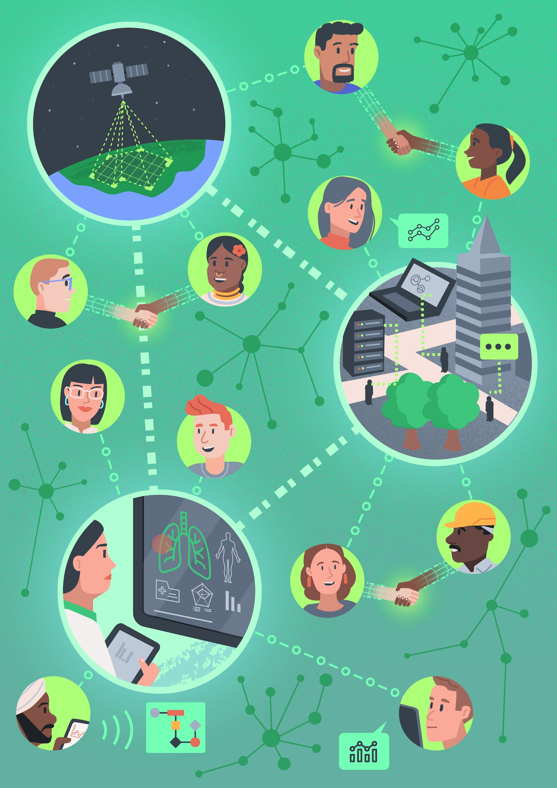

Responsible Research and Innovation in Data Science and AI
Responsible scientific research and technological innovation (RRI) is a
vital component of a flourishing and fair society. As an area of study and
mode of enquiry, RRI plays a central role within academic, public, private,
and third-sector organisations. This course will explore what it means to
take (individual and collective) responsibility for (and over) the processes
and outcomes of research and innovation in data science and AI. The notion
of 'responsibility' employed throughout this course will be grounded in an
understanding of the moral relationship between science, technology, and
society, exploring both historical and contemporary examples of RRI
practices.
As well as looking at the theoretical basis of RRI this course will also
take a hands-on approach by exploring a variety of tools and procedures that
can help operationalise and implement a robust notion of responsibility
within research and innovation practices.
Who is this course for?
Primarily, this course is for researchers with an active interest in
data science or AI research and innovation. This doesn't mean you have to
be a data scientist, or a researcher using R or Python to analyse data.
You could be an ethicist, sociologist, or someone with an interest in law
and policy. However, the course is oriented towards research issues and
related topics.
Get Started
Public Enagagement with Data Science and AI

This course is designed to help you understand the practical and ethical value of public engagement with data science and AI. The course begins with an introduction to different forms of public engagement, while critically examining the different methods and approaches. Then, through a series of structured seminars and workshops, you will consider the impact of public engagement upon both practices of research and innovation as well as society more broadly.
Following this general introduction, the course pivots to introduce and discuss practical methods of public engagement, including deliberative activities that help build consensus among stakeholder; transparent and explainable methods of data governance to support project activities; methods of data visualisation to support the communication of science and technology; and an awareness of social and psychological biases, which can negatively affect the goals of responsible public engagement.
Who is this course for?
Primarily, this course is for researchers with an active interest in
public engagement, specifically in the context of data science and
artificial intelligence. This doesn't mean you have to be a data
scientist, or use Python to develop machine learning algorithms. You could
also be an ethicist, sociologist, or someone with an interest in law and
public policy. This course has practical, and sometimes hands-on
activities that are designed to a) encourage critical reflection and b)
help you build practical understanding of the processes associated with
effective and responsible public engagement in data science and AI. While
they can be carried out as part of individual and self-directed learning,
they are most suited to group discussion.
Get Started
AI Ethics and Governance
This course is designed to help you understand the fundamentals of AI Ethics
and Governance. The course begins with an introduction to meta-ethics and
normative theories. It then follows with the practical ways AI systems can
produce diverse harms to individuals, society, and even the biosphere, as
well as the values that should be upheld when thinking about AI ethics. The
course then goes into a deeper dive on the following topics: AI
Sustainability through Stakeholder engagement and impact assessment, AI
fairness and bias mitigation, accountability and governance, explainability
and transparency, and the CARE & Act principles.
Who is this course for?
Primarily, this course is for researchers with an active interest in
the ethics and governance of data science and AI. This doesn't mean you
have to be a data scientist or develop machine learning algorithms. You
could also be an ethicist, sociologist, or someone with an interest in law
and public policy. This course has practical, and sometimes hands-on
activities that are designed to a) encourage critical reflection and b)
help you build practical understanding of the processes associated with
effective and responsible engagement with AI systems. While they can be
carried out as part of individual and self-directed learning, they are
most suited to group discussion.
Get Started
Data Justic Research and Practice

In this course we explore the emerging movement of data justice, which seeks to apply a social justice-oriented approach to examining the range of social, political, and material concerns arising within our increasingly datafied society. The course begins with an introduction to data justice through a brief overview of the movement's history and investigates how its efforts can be advanced in its second wave. It then follows with the six pillars of data justice, which serve as guiding priorities for reorienting data justice research and practice. Finally, the course examines instances of data justice in action through a range of grassroots initiatives that are being undertaken by impacted communities across the world. You will be hearing directly from individuals and communities that have been impacted by unequitable data practices and learn more about how they have been mobilising to challenge these through a three-part documentary series.
Who is this course for?
Primarily, this course is aimed for researchers and practitioners with an active interest in understanding and challenging the range of social, political, and material concerns arising within our increasingly datafied society. This doesn't mean you have to be a data scientist or developer of machine learning algorithms. You could also be an ethicist, sociologist, social justice activist, or someone with an interest in law and public policy.
Get Started
{% endblock %}